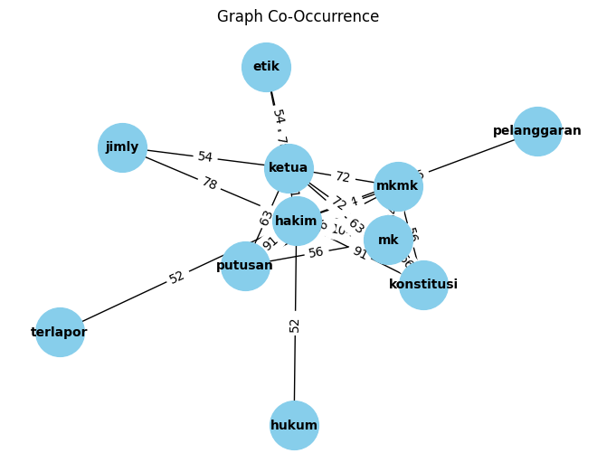

Tugas 5 : Ekstraksi Keyword#
import pandas as pd
df = pd.read_csv('https://raw.githubusercontent.com/wahyuarilsaputra/dataset/main/databerita.csv')
Pre Processing#
Menghilangkan Data yang Kosong#
df.isnull().sum()
Judul 1
Isi 1
Label 3
dtype: int64
df.dropna(inplace=True)
df = df.drop_duplicates(subset=['Judul', 'Isi'])
df
| Judul | Isi | Label | |
|---|---|---|---|
| 0 | Mahfud Md Usai Putusan MKMK Diketok: Salam Hor... | Menteri Koordinator Bidang Politik, Hukum, dan... | Politik |
| 1 | Waketum: Puncak HUT Golkar Acara Tunggal, Tak ... | Partai Golkar akan menggelar puncak perayaan H... | Politik |
| 2 | Pertamina Bentuk Generasi Muda Peduli Lingkung... | Pertamina bersama Subholding Refining & Petroc... | Edukasi |
| 3 | FKG UI Gelar Seminar Kesehatan Gigi-Mulut untu... | Stunting masih menjadi salah satu masalah kese... | Edukasi |
| 4 | Warga Israel Demo Desak Netanyahu Dipenjara ka... | Warga Israel melakukan unjuk rasa di depan ked... | Politik |
| ... | ... | ... | ... |
| 1222 | Daftar 366 Caleg DPRD Kabupaten Luwu Timur Len... | Komisi Pemilihan Umum (KPU) Luwu Timur, Sulawe... | Politik |
| 1223 | Tekuk Salzburg Jadi Permudah Jalan Inter ke Fa... | Inter Milan harus susah payah mengalahkan Red ... | Sport |
| 1224 | Mitsubishi Pajero Didapuk Jadi Mobil Bersejarah | SUV legendaris Mitsubishi Pajero generasi pert... | Sport |
| 1225 | Cerita Hilangnya Gitar Milik Gitaris Mocca, Bu... | Gitaris Sheila On 7 Eross Candra sempat dikaba... | Edukasi |
| 1226 | PDIP Tak Tarik Menteri dari Kabinet Jokowi, PK... | Sekjen PDIP Hasto Kristiyanto menegaskan bahwa... | Politik |
1224 rows × 3 columns
Cleaning Data#
import re, string
# Text Cleaning
def cleaning(text):
# Menghapus tag HTML
text = re.compile('<.*?>|&([a-z0-9]+|#[0-9]{1,6}|#x[0-9a-f]{1,6});').sub('', str(text))
# Mengubah seluruh teks menjadi huruf kecil
text = text.lower()
# Menghapus spasi pada teks
text = text.strip()
# Menghapus Tanda Baca, karakter spesial, and spasi ganda
text = re.compile('<.*?>').sub('', text)
text = re.compile('[%s]' % re.escape(string.punctuation)).sub(' ', text)
text = re.sub('\s+', ' ', text)
text = re.sub("â½ïgoal", "", text)
text = re.sub("SCROLL TO CONTINUE WITH CONTENT", "", text)
text = re.sub(r'[^a-zA-Z\s]', '', text)
# Menghapus Nomor
text = re.sub(r'\[[0-9]*\]', ' ', text)
text = re.sub(r'[^\w\s]', '', str(text).lower().strip())
text = re.sub(r'\d', ' ', text)
text = re.sub(r'\s+', ' ', text)
# Mengubah text yang berisi 'nan' dengan whitespace agar nantinya dapat dihapus
text = re.sub('nan', '', text)
return text
df['Isi'] = df['Isi'].apply(lambda x: cleaning(x))
Tokenisasi Data#
import nltk
from nltk.tokenize import word_tokenize
nltk.download('popular')
[nltk_data] Downloading collection 'popular'
[nltk_data] |
[nltk_data] | Downloading package cmudict to /root/nltk_data...
[nltk_data] | Package cmudict is already up-to-date!
[nltk_data] | Downloading package gazetteers to /root/nltk_data...
[nltk_data] | Package gazetteers is already up-to-date!
[nltk_data] | Downloading package genesis to /root/nltk_data...
[nltk_data] | Package genesis is already up-to-date!
[nltk_data] | Downloading package gutenberg to /root/nltk_data...
[nltk_data] | Package gutenberg is already up-to-date!
[nltk_data] | Downloading package inaugural to /root/nltk_data...
[nltk_data] | Package inaugural is already up-to-date!
[nltk_data] | Downloading package movie_reviews to
[nltk_data] | /root/nltk_data...
[nltk_data] | Package movie_reviews is already up-to-date!
[nltk_data] | Downloading package names to /root/nltk_data...
[nltk_data] | Package names is already up-to-date!
[nltk_data] | Downloading package shakespeare to /root/nltk_data...
[nltk_data] | Package shakespeare is already up-to-date!
[nltk_data] | Downloading package stopwords to /root/nltk_data...
[nltk_data] | Package stopwords is already up-to-date!
[nltk_data] | Downloading package treebank to /root/nltk_data...
[nltk_data] | Package treebank is already up-to-date!
[nltk_data] | Downloading package twitter_samples to
[nltk_data] | /root/nltk_data...
[nltk_data] | Package twitter_samples is already up-to-date!
[nltk_data] | Downloading package omw to /root/nltk_data...
[nltk_data] | Package omw is already up-to-date!
[nltk_data] | Downloading package omw-1.4 to /root/nltk_data...
[nltk_data] | Package omw-1.4 is already up-to-date!
[nltk_data] | Downloading package wordnet to /root/nltk_data...
[nltk_data] | Package wordnet is already up-to-date!
[nltk_data] | Downloading package wordnet2021 to /root/nltk_data...
[nltk_data] | Package wordnet2021 is already up-to-date!
[nltk_data] | Downloading package wordnet31 to /root/nltk_data...
[nltk_data] | Package wordnet31 is already up-to-date!
[nltk_data] | Downloading package wordnet_ic to /root/nltk_data...
[nltk_data] | Package wordnet_ic is already up-to-date!
[nltk_data] | Downloading package words to /root/nltk_data...
[nltk_data] | Package words is already up-to-date!
[nltk_data] | Downloading package maxent_ne_chunker to
[nltk_data] | /root/nltk_data...
[nltk_data] | Package maxent_ne_chunker is already up-to-date!
[nltk_data] | Downloading package punkt to /root/nltk_data...
[nltk_data] | Package punkt is already up-to-date!
[nltk_data] | Downloading package snowball_data to
[nltk_data] | /root/nltk_data...
[nltk_data] | Package snowball_data is already up-to-date!
[nltk_data] | Downloading package averaged_perceptron_tagger to
[nltk_data] | /root/nltk_data...
[nltk_data] | Package averaged_perceptron_tagger is already up-
[nltk_data] | to-date!
[nltk_data] |
[nltk_data] Done downloading collection popular
True
df['isi_tokens'] = df['Isi'].apply(lambda x: word_tokenize(x))
df[["Isi", "isi_tokens"]].head()
| Isi | isi_tokens | |
|---|---|---|
| 0 | menteri koordinator bidang politik hukum dan k... | [menteri, koordinator, bidang, politik, hukum,... |
| 1 | partai golkar akan menggelar puncak perayaan h... | [partai, golkar, akan, menggelar, puncak, pera... |
| 2 | pertamina bersama subholding refining petroche... | [pertamina, bersama, subholding, refining, pet... |
| 3 | stunting masih menjadi salah satu masalah kese... | [stunting, masih, menjadi, salah, satu, masala... |
| 4 | warga israel melakukan unjuk rasa di depan ked... | [warga, israel, melakukan, unjuk, rasa, di, de... |
StopWord Data#
nltk.download('stopwords')
[nltk_data] Downloading package stopwords to /root/nltk_data...
[nltk_data] Package stopwords is already up-to-date!
True
from nltk.corpus import stopwords
from itertools import chain
stop_words = set(chain(stopwords.words('indonesian')))
df['isi_tokens'] = df['isi_tokens'].apply(lambda x: [w for w in x if not w in stop_words])
df['Isi'] = df['isi_tokens'].apply(lambda tokens: ' '.join(tokens))
df.head()
| Judul | Isi | Label | isi_tokens | |
|---|---|---|---|---|
| 0 | Mahfud Md Usai Putusan MKMK Diketok: Salam Hor... | menteri koordinator bidang politik hukum keama... | Politik | [menteri, koordinator, bidang, politik, hukum,... |
| 1 | Waketum: Puncak HUT Golkar Acara Tunggal, Tak ... | partai golkar menggelar puncak perayaan hut pa... | Politik | [partai, golkar, menggelar, puncak, perayaan, ... |
| 2 | Pertamina Bentuk Generasi Muda Peduli Lingkung... | pertamina subholding refining petrochemical pt... | Edukasi | [pertamina, subholding, refining, petrochemica... |
| 3 | FKG UI Gelar Seminar Kesehatan Gigi-Mulut untu... | stunting salah kesehatan fokus perhatian indon... | Edukasi | [stunting, salah, kesehatan, fokus, perhatian,... |
| 4 | Warga Israel Demo Desak Netanyahu Dipenjara ka... | warga israel unjuk kediaman perdana menteri pm... | Politik | [warga, israel, unjuk, kediaman, perdana, ment... |
Co-Occurency Matriks#
df['Isi'][0]
'menteri koordinator bidang politik hukum keama menko polhukam mahfud md menyambut putusan etik majelis kehormatan mahkamah konstitusi mkmk mantan hakim mk menaruh hormat pendahulunya jimly asshiddiqie ketua mkmk sedih malu hakim ketua mk mkmk mengeluarkan putusan pelanggaran etik hakim konstitusi bangga mk guardian of constitution salam hormat jimly bintan wahiduddin tulis mahfud akun x mohmahfudmd selasa mkmk jimly ketua wahiduddin adams bintan r saragih jimly ketua mk pendahulu mahfud ahli hukum bergelar profesor scroll to continue with content perkara diputus mkmk dugaan pelanggaran etik putusan usia capres cawapres dibacakan mk oktober etik disoal berkutat anwar usman ketua mk ipar presiden jokowi ayah salah tokoh potensial cawapres gibran rakabuming raka mkmk membacakan putusan nomor mkmk l putusan terkait dugaan pelanggaran etik hakim mahkamah konstitusi terlapor ketua mk anwar usman hakim terlapor terbukti pelanggaran berat ketua mkmk jimly asshiddiqie membacakan putusannya sanksi pemberhentian jabatan ketua mahkamah konstitusi hakim terlapor sambungnya putusan terkait laporan denny indrayana perekat nusantara tpdi tapp perhimpu pemuda madani pbhi tim advokasi peduli hukum indonesia lbh barisan relawan jalan perubahan guru pengajar hukum tergabung constitutional administrative law society cals advokat pengawal konstitusi lbh yusuf zico leonardo djagardo simanjuntak kipp tumpak nainggolan bem unusia alamsyah hanafiah padi sembilan hakim dinyatakan kena sanksi lisan terbukti menjaga informasi rahasia rapat permusyawaratan hakim rph bersifat tertutup hakim terlapor hakim terbukti pelanggaran kode etik perilaku hakim konstitusi tertuang sapta karsa hutama prinsip kepantasan kesopa kebocoran informasi rahasia rapat pemusyawaratan hakim pembiaran praktik benturan kepentingan hakim konstitusi pegan perkara jimly membacakan putusannya simak video detik detik pembacaan putusan pemberhentian anwar usman ketua mk gambas video detik'
from sklearn.feature_extraction.text import CountVectorizer
vectorizer = CountVectorizer(tokenizer=lambda x: x.split())
X = vectorizer.fit_transform([df['Isi'][0]])
co_occurrence_matrix = (X.T * X)
co_occurrence_matrix.setdiag(0)
co_occurrence_df = pd.DataFrame(co_occurrence_matrix.toarray(), columns=vectorizer.get_feature_names_out(),index=vectorizer.get_feature_names_out())
co_occurrence_df
/usr/local/lib/python3.10/dist-packages/sklearn/feature_extraction/text.py:528: UserWarning: The parameter 'token_pattern' will not be used since 'tokenizer' is not None'
warnings.warn(
| adams | administrative | advokasi | advokat | ahli | akun | alamsyah | anwar | asshiddiqie | ayah | ... | tumpak | unusia | usia | usman | video | wahiduddin | with | x | yusuf | zico | |
|---|---|---|---|---|---|---|---|---|---|---|---|---|---|---|---|---|---|---|---|---|---|
| adams | 0 | 1 | 1 | 1 | 1 | 1 | 1 | 3 | 2 | 1 | ... | 1 | 1 | 1 | 3 | 2 | 2 | 1 | 1 | 1 | 1 |
| administrative | 1 | 0 | 1 | 1 | 1 | 1 | 1 | 3 | 2 | 1 | ... | 1 | 1 | 1 | 3 | 2 | 2 | 1 | 1 | 1 | 1 |
| advokasi | 1 | 1 | 0 | 1 | 1 | 1 | 1 | 3 | 2 | 1 | ... | 1 | 1 | 1 | 3 | 2 | 2 | 1 | 1 | 1 | 1 |
| advokat | 1 | 1 | 1 | 0 | 1 | 1 | 1 | 3 | 2 | 1 | ... | 1 | 1 | 1 | 3 | 2 | 2 | 1 | 1 | 1 | 1 |
| ahli | 1 | 1 | 1 | 1 | 0 | 1 | 1 | 3 | 2 | 1 | ... | 1 | 1 | 1 | 3 | 2 | 2 | 1 | 1 | 1 | 1 |
| ... | ... | ... | ... | ... | ... | ... | ... | ... | ... | ... | ... | ... | ... | ... | ... | ... | ... | ... | ... | ... | ... |
| wahiduddin | 2 | 2 | 2 | 2 | 2 | 2 | 2 | 6 | 4 | 2 | ... | 2 | 2 | 2 | 6 | 4 | 0 | 2 | 2 | 2 | 2 |
| with | 1 | 1 | 1 | 1 | 1 | 1 | 1 | 3 | 2 | 1 | ... | 1 | 1 | 1 | 3 | 2 | 2 | 0 | 1 | 1 | 1 |
| x | 1 | 1 | 1 | 1 | 1 | 1 | 1 | 3 | 2 | 1 | ... | 1 | 1 | 1 | 3 | 2 | 2 | 1 | 0 | 1 | 1 |
| yusuf | 1 | 1 | 1 | 1 | 1 | 1 | 1 | 3 | 2 | 1 | ... | 1 | 1 | 1 | 3 | 2 | 2 | 1 | 1 | 0 | 1 |
| zico | 1 | 1 | 1 | 1 | 1 | 1 | 1 | 3 | 2 | 1 | ... | 1 | 1 | 1 | 3 | 2 | 2 | 1 | 1 | 1 | 0 |
165 rows × 165 columns
Graph Co-occurency#
import matplotlib.pyplot as plt
import networkx as nx
from itertools import combinations
G = nx.Graph()
for idx, row in co_occurrence_df.iterrows():
for col in co_occurrence_df.columns:
weight = co_occurrence_df.loc[idx, col]
if weight > 50 and idx != col:
G.add_edge(idx, col, weight=weight)
pos = nx.spring_layout(G)
nx.draw(G, pos, with_labels=True, font_weight='bold', node_color='skyblue', node_size=1500, edge_color='black', linewidths=1, font_size=10)
edge_labels = nx.get_edge_attributes(G, 'weight')
nx.draw_networkx_edge_labels(G, pos, edge_labels=edge_labels)
plt.title('Graph Co-Occurrence')
plt.show()

Closeness Centrality#
closeness_centrality = nx.closeness_centrality(G)
print("Closeness Centrality:")
for node, closeness in sorted(closeness_centrality.items(), key=lambda x: x[1], reverse=True):
print(f"{node}: {closeness}")
Closeness Centrality:
hakim: 1.0
ketua: 0.7692307692307693
mk: 0.6666666666666666
mkmk: 0.6666666666666666
konstitusi: 0.625
putusan: 0.625
etik: 0.5555555555555556
jimly: 0.5555555555555556
hukum: 0.5263157894736842
pelanggaran: 0.5263157894736842
terlapor: 0.5263157894736842
PageRank Centrality#
Algoritma Pagerank#
Contoh Manual perhitungan pagerank#
Rumus pagerank menggunakan latex#
pagerank = nx.pagerank(G)
print("\nPageRank:")
for node, rank in sorted(pagerank.items(), key=lambda x: x[1], reverse=True):
print(f"{node}: {rank}")
PageRank:
hakim: 0.27290389111241725
ketua: 0.15270814369232177
mk: 0.10870842519213564
mkmk: 0.10870842519213564
konstitusi: 0.08492860826596063
putusan: 0.08492860826596063
etik: 0.049543348548932435
jimly: 0.049543348548932435
pelanggaran: 0.03175871374102233
hukum: 0.028134243720090595
terlapor: 0.028134243720090595
Rangking Kata Penting dari hasil Centrality#
df['Isi'][0]
'menteri koordinator bidang politik hukum keama menko polhukam mahfud md menyambut putusan etik majelis kehormatan mahkamah konstitusi mkmk mantan hakim mk menaruh hormat pendahulunya jimly asshiddiqie ketua mkmk sedih malu hakim ketua mk mkmk mengeluarkan putusan pelanggaran etik hakim konstitusi bangga mk guardian of constitution salam hormat jimly bintan wahiduddin tulis mahfud akun x mohmahfudmd selasa mkmk jimly ketua wahiduddin adams bintan r saragih jimly ketua mk pendahulu mahfud ahli hukum bergelar profesor scroll to continue with content perkara diputus mkmk dugaan pelanggaran etik putusan usia capres cawapres dibacakan mk oktober etik disoal berkutat anwar usman ketua mk ipar presiden jokowi ayah salah tokoh potensial cawapres gibran rakabuming raka mkmk membacakan putusan nomor mkmk l putusan terkait dugaan pelanggaran etik hakim mahkamah konstitusi terlapor ketua mk anwar usman hakim terlapor terbukti pelanggaran berat ketua mkmk jimly asshiddiqie membacakan putusannya sanksi pemberhentian jabatan ketua mahkamah konstitusi hakim terlapor sambungnya putusan terkait laporan denny indrayana perekat nusantara tpdi tapp perhimpu pemuda madani pbhi tim advokasi peduli hukum indonesia lbh barisan relawan jalan perubahan guru pengajar hukum tergabung constitutional administrative law society cals advokat pengawal konstitusi lbh yusuf zico leonardo djagardo simanjuntak kipp tumpak nainggolan bem unusia alamsyah hanafiah padi sembilan hakim dinyatakan kena sanksi lisan terbukti menjaga informasi rahasia rapat permusyawaratan hakim rph bersifat tertutup hakim terlapor hakim terbukti pelanggaran kode etik perilaku hakim konstitusi tertuang sapta karsa hutama prinsip kepantasan kesopa kebocoran informasi rahasia rapat pemusyawaratan hakim pembiaran praktik benturan kepentingan hakim konstitusi pegan perkara jimly membacakan putusannya simak video detik detik pembacaan putusan pemberhentian anwar usman ketua mk gambas video detik'
ranking_closeness = sorted(closeness_centrality.items(), key=lambda x: x[1], reverse=True)[:10]
print("Kata Kunci dari berita diatas menggunakan closeness berdasarkan urutan (Rank):")
for i, (node, closeness) in enumerate(ranking_closeness, 1):
print(f"Rank {i}: {node} nilai closeness {closeness}")
Kata Kunci dari berita diatas menggunakan closeness berdasarkan urutan (Rank):
Rank 1: hakim nilai closeness 1.0
Rank 2: ketua nilai closeness 0.7692307692307693
Rank 3: mk nilai closeness 0.6666666666666666
Rank 4: mkmk nilai closeness 0.6666666666666666
Rank 5: konstitusi nilai closeness 0.625
Rank 6: putusan nilai closeness 0.625
Rank 7: etik nilai closeness 0.5555555555555556
Rank 8: jimly nilai closeness 0.5555555555555556
Rank 9: hukum nilai closeness 0.5263157894736842
Rank 10: pelanggaran nilai closeness 0.5263157894736842
ranking_pagerank = sorted(pagerank.items(), key=lambda x: x[1], reverse=True)[:10]
print("Kata Kunci dari berita diatas menggunakan pagerank berdasarkan urutan (Rank):")
for i, (node, pagerank) in enumerate(ranking_pagerank, 1):
print(f"Rank {i}: {node} nilai Pagerank {pagerank}")
Kata Kunci dari berita diatas menggunakan pagerank berdasarkan urutan (Rank):
Rank 1: hakim nilai Pagerank 0.27290389111241725
Rank 2: ketua nilai Pagerank 0.15270814369232177
Rank 3: mk nilai Pagerank 0.10870842519213564
Rank 4: mkmk nilai Pagerank 0.10870842519213564
Rank 5: konstitusi nilai Pagerank 0.08492860826596063
Rank 6: putusan nilai Pagerank 0.08492860826596063
Rank 7: etik nilai Pagerank 0.049543348548932435
Rank 8: jimly nilai Pagerank 0.049543348548932435
Rank 9: pelanggaran nilai Pagerank 0.03175871374102233
Rank 10: hukum nilai Pagerank 0.028134243720090595